Quem é Garoá?
Sou artista e transito entre a música e a poesia, em diálogo com a produção musical, a literatura e a experimentação sonora. Foi nessa ponte que encontrei a composição, que é a minha parte favorita de tudo isso.
Meu caminho começou na produção musical, ainda na faculdade, fazendo beats e instrumentais. Foi aí que comecei a escrever e a cantar, e percebi que gosto ainda mais de escrever do que de cantar. Subi ao palco pela primeira vez em um sarau, em 2023, e desde então venho me apresentando na cena local, inclusive no Sesc Glória, em um show contemplado por edital.
Criada na Região 3 de Vila Velha, levo para as minhas letras as experiências sociais por uma perspectiva pessoal: um olhar sobre a periferia, o gênero e as questões existenciais. Meu som é feito de voz, guitarra e poesia.
Seu Universo
Meu universo musical é íntimo e feito, principalmente, de voz, guitarra e poesia. Gosto de uma sonoridade acústica e próxima, em que a palavra tem o mesmo peso que a melodia. Para mim, é na música que consigo me expressar melhor, e a escrita é o centro de tudo.
Escrevo quando as coisas precisam escapar para algum lugar. Isso pode acontecer no ônibus, no trabalho ou em silêncio no meu quarto. Às vezes escrevo sem precisar, sem ideia aparente, só para não deixar a cabeça adormecer demais.
Encontro muita inspiração fora da música e também na produção local. Entre os artistas que me acompanham estão:
-
Tuyo

-
Matheus de Bezerra
-
Jeff Buckley

Galeria de Fotos
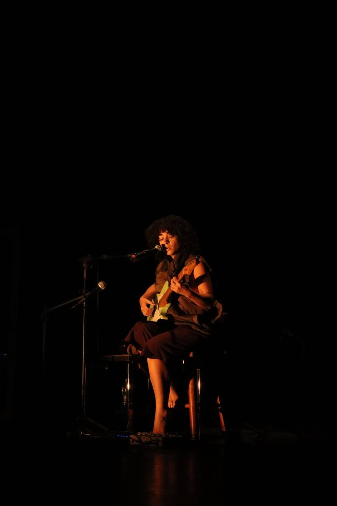
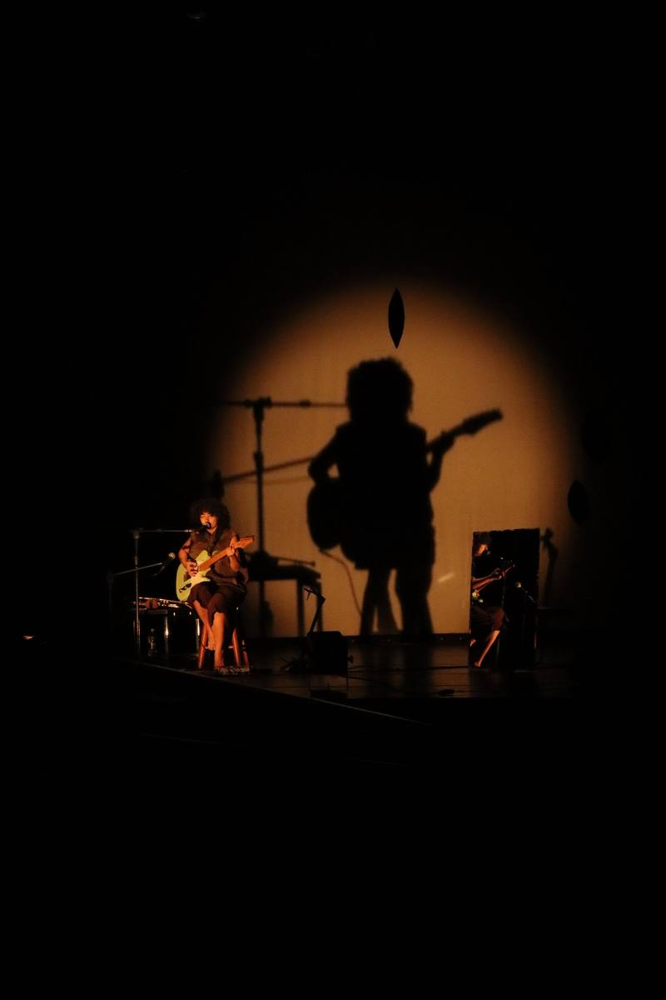
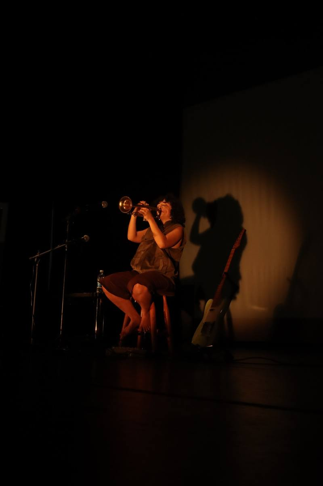
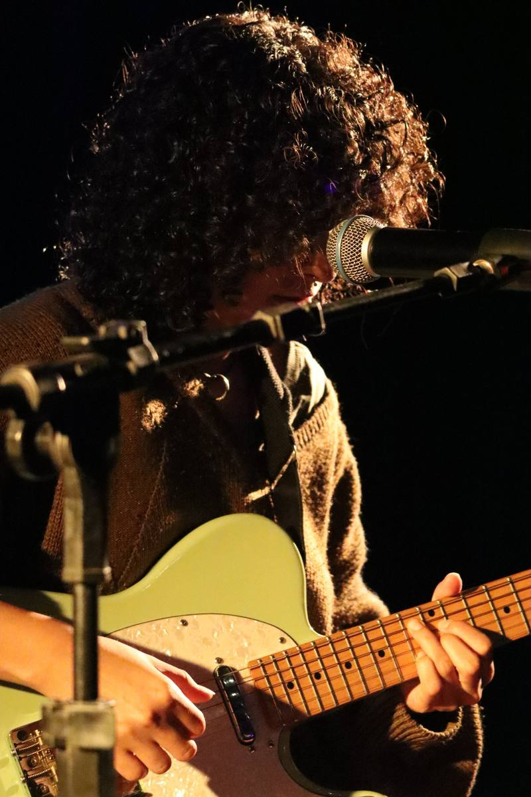
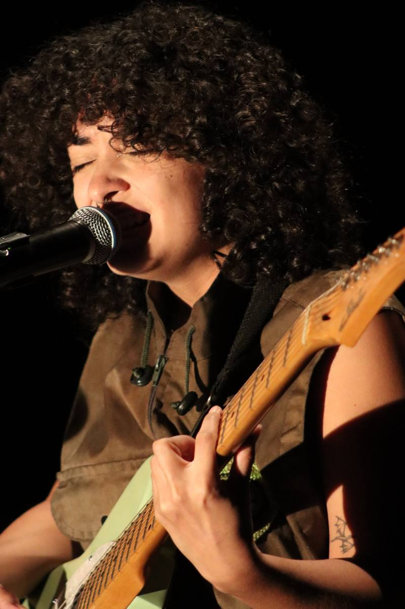
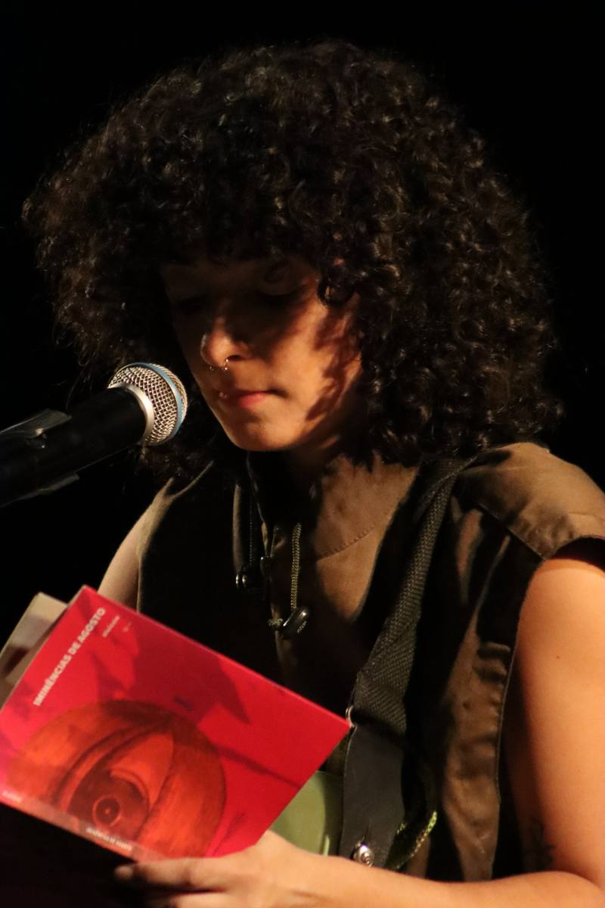
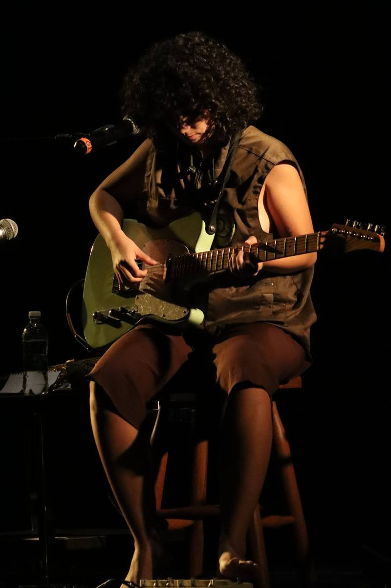
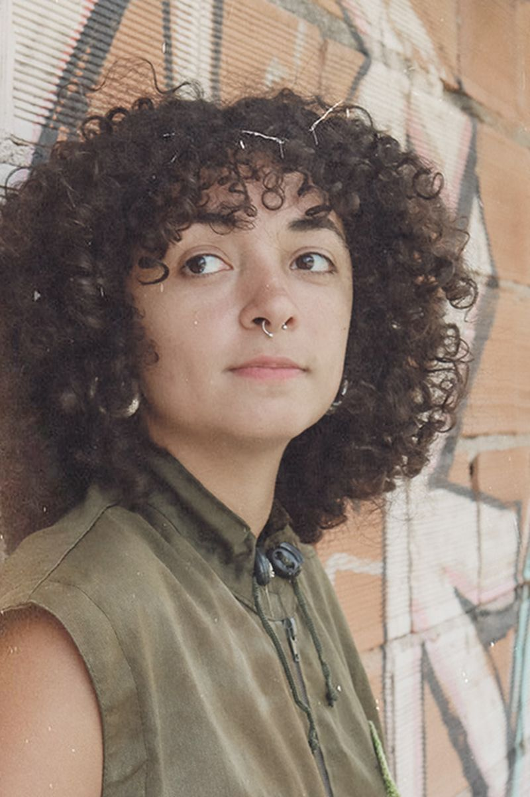
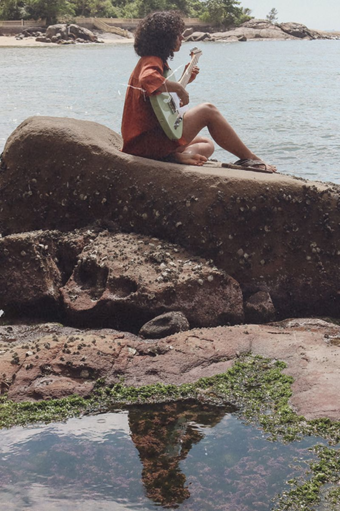
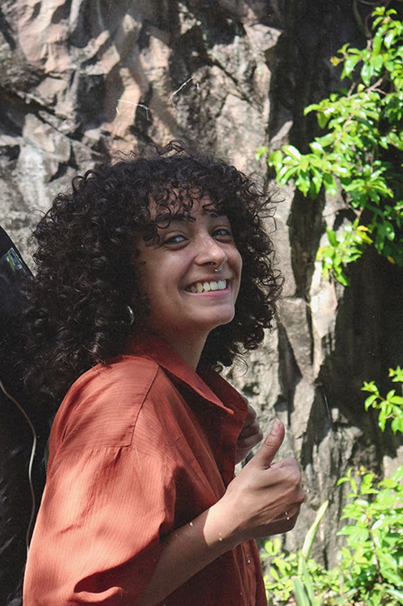
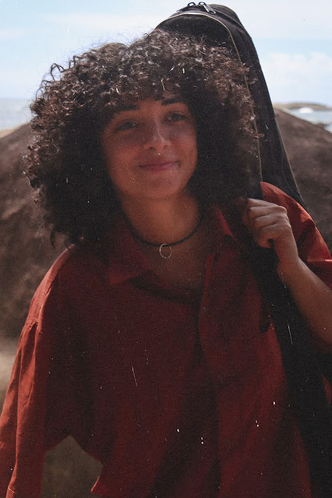
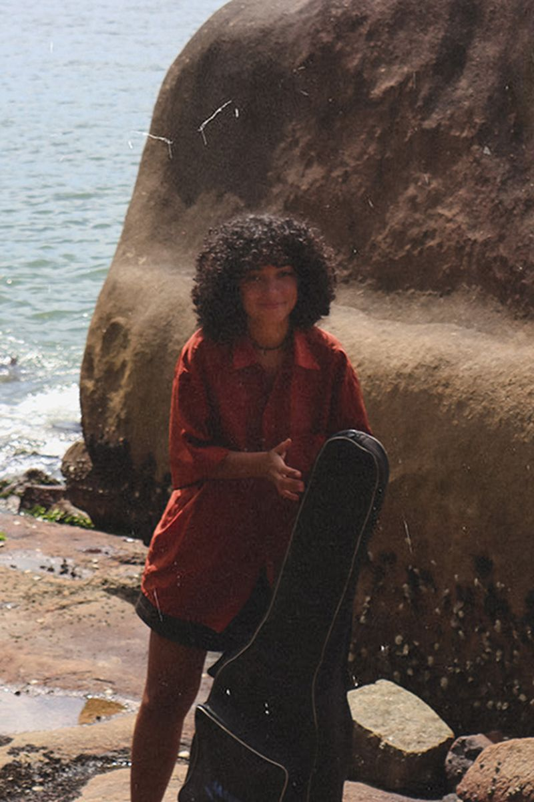
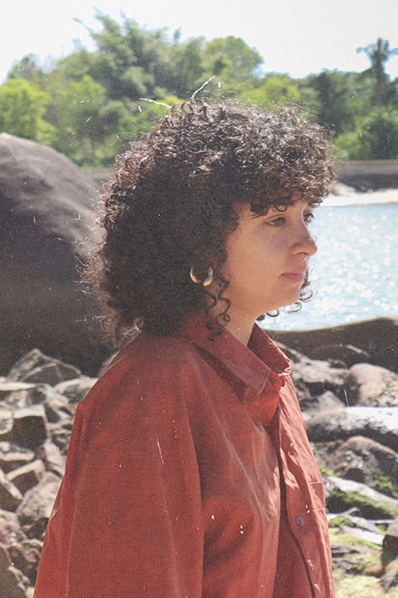
O que as coisas (não) são
Eu gosto de fazer listas com definições das coisas. Tinha uma lista com tudo o que a memória poderia ser. Quando comecei a escrever as músicas, senti a necessidade de elaborar sobre a efemeridade de tudo. Ao juntar essas duas ideias, todas as faixas do EP se tornaram uma busca por algo mais concreto, por significados. E, ao esbarrar na contradição dos fins, o EP acabou se tornando sobre o que as coisas não são.
Agendas
Contato
Para eventos
E-mail: contato.garoar@gmail.com
- Instagram: @a.garoar
- YouTube: @garoaeossilencios
- SoundCloud: agaroar
- TikTok: @a.garoa